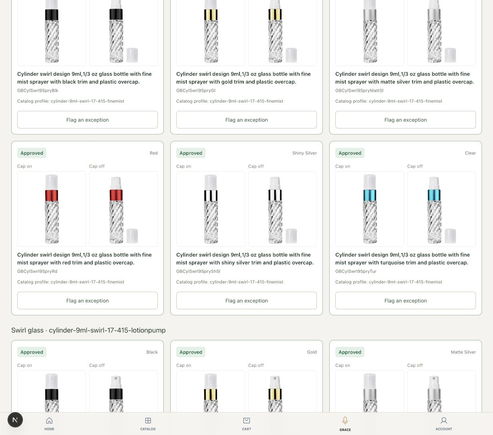
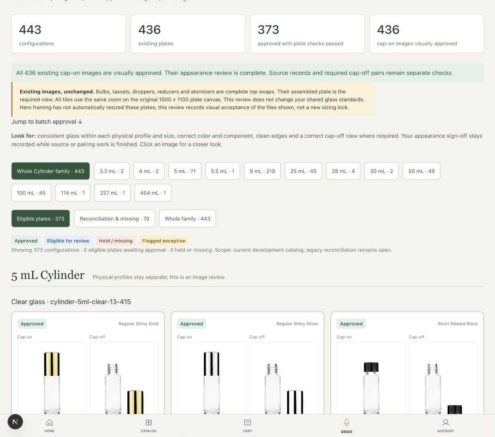

Cylinder cap-on approval recorded
Visual approvals increased from 373 to 436. All 436 existing cap-on images are approved. The 373 fully cleared plates stay unchanged; source and required-view checks remain separate. No product image was resized, regenerated or published.
Both workbench captures use the same browser zoom and viewport.
Before: 373 cap-on images visually approved
After: 436 cap-on images visually approved